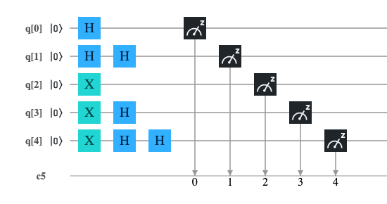
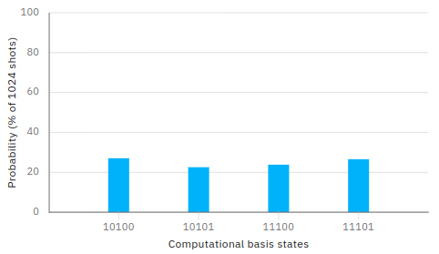
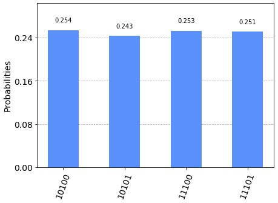

Porte Hadamard in cascata
La porta Hadamard applicata a un qubit con valore iniziale che sia $|0\rangle$ oppure $|1\rangle$ porta il qubit stesso in uno stato di sovrapposizione in modo tale che
effettuando una misura (e quindi il collasso della funzione d'onda) si ottiene il risultato di 0 o 1 con la stessa probabilità.
Ragionando classicamente potremmo pensare che l'applicazione di una porta Hadamard e una seguente misura sia come il lancio di una moneta ove la probabilità che esca
testa (o croce) è del 50%. Continuando il paragone, rilanciando in aria la moneta una seconda volta e andando a guardare il risultato, si deduce banalmente che la probabilità
di ottenere testa (o croce) è sempre del 50%. In altre parole un secondo lancio non cambia la distribuzione di probabilità del risultato rispetto al caso di un singolo lancio.
Invece nel mondo quantistico questo paragone è fuorviante, infatti la seconda applicazione della porta Hadamard riporta lo stato del qubit al valore precedente la prima applicazione.
Questo post mostra come nella computazione quantistica è bene modellare matematicamente i comportamenti degli operatori senza avventurarsi in azzardati paragoni con il mondo macroscopico.
Il modello matematico del qubit
Il qubit è descritto matematicamente come uno spazio di Hilbert complesso bidimensionale. La base canonica di questo spazio si indica (usando la notazione di Dirac) con
$$\{|0\rangle,|1\rangle\}$$
che scritta nella forma della base dei vettori delle componenti è
$$\{\begin{bmatrix} 1 \\ 0 \\ \end{bmatrix},\begin{bmatrix} 0 \\ 1 \\ \end{bmatrix}\}$$
e ciascun elemento della base corrisponde rispettivamente ai bit classici 0 e 1.
Come per ogni spazio vettoriale, ogni vettore dello spazio può essere scritto univocamente come combinazione lineare dei vettori della base
$$|\psi\rangle=\alpha|0\rangle + \beta|1\rangle$$
dove $\alpha$ e $\beta$ si chiamano ampiezze di probabilità e devono essere tali da soddisfare $|\alpha|^2 + |\beta|^2 = 1$
La meccanica quantistica dice che se si effettua una misura (rispetto alla base) si può soltanto ottenere lo stato $|0\rangle$ (corrispondente al bit 0)
con probabilità $|\alpha|^2$ oppure lo stato $|1\rangle$ (corrispondente al bit 1) con probabilità $|\beta|^2$.
Il modello matematico della porta Hadamard
La porta Hadamard è matematicamente modellata dalla seguente matrice $$H=\frac{1}{\sqrt{2}} \left[\begin{matrix} 1 & 1 \\ 1 & -1 \end{matrix} \right]$$ Applicando $H$ al vettore delle componenti di $|0\rangle$ si ottiene $$\frac{1}{\sqrt{2}} \left[\begin{matrix} 1 & 1 \\ 1 & -1 \end{matrix} \right] \begin{bmatrix} 1 \\ 0 \\ \end{bmatrix}=\frac{1}{\sqrt{2}}\begin{bmatrix} 1 \\ 1 \\ \end{bmatrix}$$ che corrisponde nello spazio vettoriale iniziale al vettore espresso dalla combinazione lineare $$\frac{|0\rangle + |1\rangle}{\sqrt{2}}$$ e per quanto detto sopra, se si effettua una misura, la probabilità di ottenere $|1\rangle$ è $|\beta|^2=(|1/\sqrt2|)^2=(1/\sqrt2)^2=1/2$. Ne consegue che la probabilità di ottenere $|0\rangle$ è anche essa uguale a $1/2$.
Applicando $H$ al vettore delle componenti di $|1\rangle$ si ottiene $$\frac{1}{\sqrt{2}} \left[\begin{matrix} 1 & 1 \\ 1 & -1 \end{matrix} \right] \begin{bmatrix} 0 \\ 1 \\ \end{bmatrix}=\frac{1}{\sqrt{2}}\begin{bmatrix} 1 \\ -1 \\ \end{bmatrix}$$ che corrisponde nello spazio vettoriale iniziale al vettore espresso dalla combinazione lineare $$\frac{|0\rangle - |1\rangle}{\sqrt{2}}$$ e per quanto detto sopra, se si effettua una misura, la probabilità di ottenere $|1\rangle$ è $|\beta|^2=(|-1/\sqrt2|)^2=(1/\sqrt2)^2=1/2$. Ne consegue che la probabilità di ottenere $|0\rangle$ è anche essa uguale a $1/2$.
La doppia applicazione della porta Hadamard
Si osservi che la matrice $H$ che modella la porta Hadamard è hermetiana e unitaria.
È hermetiana perché la sua trasposta coniugata coincide con la matrice stessa,
infatti scambiando le righe con le colonne e invertendo i segni delle parti immaginarie (che non ci sono)
$$H=\frac{1}{\sqrt{2}} \left[\begin{matrix} 1 & 1 \\ 1 & -1 \end{matrix} \right]$$
si ottiene sempre
$$H^\dag=\frac{1}{\sqrt{2}} \left[\begin{matrix} 1 & 1 \\ 1 & -1 \end{matrix} \right]$$
che è appunto la matrice di partenza $H$.
È unitaria perché la sua trasposta coniugata coincide con la sua inversa.
Si osservi intanto che
$$H^{-1}=\frac{1}{\sqrt{2}} \left[\begin{matrix} 1 & 1 \\ 1 & -1 \end{matrix} \right]=H$$
e la verifica è un semplice calcolo
$$H^{-1}H=\frac{1}{\sqrt{2}} \left[\begin{matrix} 1 & 1 \\ 1 & -1 \end{matrix} \right] \frac{1}{\sqrt{2}} \left[\begin{matrix} 1 & 1 \\ 1 & -1 \end{matrix} \right]=\frac{1}{2} \left[\begin{matrix} 2 & 0 \\ 0 & 2 \end{matrix} \right] = \left[\begin{matrix} 1 & 0 \\ 0 & 1 \end{matrix} \right] = I$$
Vale dunque l'equivalenza $$HH=HH^{-1}=HH^\dag=I$$
per cui vale per qualsiasi vettore (usando la proprietà associativa del prodotto matriciale) $|\psi\rangle$ vale
$$HH|\psi\rangle=I|\psi\rangle=|\psi\rangle$$
e quindi la doppia applicazione di una porta Hadamard in cascata porta il sistema allo stato precedente
la prima applicazione.
Il circuito quantistico
Avendo mostrato che la doppia applicazione di una porta Hadamard equivale all'applicazione della matrice identità,
banalemente vale, in quanto caso particolare, le equivalenze
$HH|0\rangle=I|0\rangle=|0\rangle$ e $HH|1\rangle=I|1\rangle=|1\rangle$.
Il circuito quantistico

realizza le seguenti applicazioni (considerando che il valore iniziale di tutti i qubit è $|0\rangle$):
Codice in QASM
Il seguente programma è la traduzione in linguaggio QASM del circuito illustrato sopra; questo programma è stato testato sia sul computer quanstico 'ibmq_london' di IBM che sul simulatore 'qasm_simulator' di IBM.
include "qelib1.inc";
qreg q[5];
creg c[5];
h q[0];
h q[1];
h q[1];
x q[2];
x q[3];
h q[3];
x q[4];
h q[4];
h q[4];
measure q[0] -> c[0];
measure q[1] -> c[1];
measure q[2] -> c[2];
measure q[3] -> c[3];
measure q[4] -> c[4];Codice in Python con Qiskit
Il seguente programma è la traduzione in Python Qiskit del circuito illustrato sopra; questo programma è stato testato all'interno di un Jupyter Notebook utilizzando come backend sia il computer quanstico 'ibmq_london' di IBM che il simulatore 'qasm_simulator' di IBM.
q = QuantumRegister(5, 'q')
c = ClassicalRegister(5, 'c')
circuit = QuantumCircuit(q, c)
circuit.h(q[0])
circuit.h(q[1])
circuit.h(q[1])
circuit.x(q[2])
circuit.x(q[3])
circuit.h(q[3])
circuit.x(q[4])
circuit.h(q[4])
circuit.h(q[4])
circuit.measure(q, c)Codice in Microsoft Q# per simulatore
Il seguente programma è la traduzione in Microsoft Q# Qiskit del circuito illustrato sopra; questo programma è stato testato su un laptop linux con .NET Core e runtime Q# installati.
namespace ComputationalMindset.QuantumExperiments
open Microsoft.Quantum.Intrinsic;
open Microsoft.Quantum.Canon;
open Microsoft.Quantum.Measurement;
operation CascadeHadamardGates() : (Result, Result, Result, Result, Result)
{
using (q = Qubit[5])
{
H(q[0]);
H(q[1]);
H(q[1]);
X(q[2]);
X(q[3]);
H(q[3]);
X(q[4]);
H(q[4]);
H(q[4]);
let result = (M(q[0]), M(q[1]), M(q[2]), M(q[3]), M(q[4]));
ResetAll(q);
return result;
}
}
Risultati su IBM Q Experience
Entrambi i programmi per IBM Q Experience sono stati eseguiti con un numero di shot=1024 sia sul simulatore IBM 'qasm_simulator' che sul computer quantisco IBM 'ibmq_london'
ottenendo la distribuzione attesa: i bit 1, 2 e 4 sono costanti (valgono rispettivamente sempre 0, 1 e 1).
I bit 0 e 3 si combinano nelle 4 coppie 00 01 10 e 11 ciascuna con il 25% di probabilità.
La non perfetta distribuzione mostrata nel caso dei computer quantistici reali rispetto ai simulatori è riconducibile a rumori.
Nota: Data la natura stocastica di questo codice, i singoli specifici risultati possono variare. Si consideri di eseguire il codice più volte.

Risultato del programma scritto in QASM su simulatore IBM 'qasm_simulator'

Risultato del programma scritto in QASM su computer quantistico IBM 'ibmq_london'

Risultato del programma scritto in Python + Qiskit su simulatore IBM 'qasm_simulator'

Risultato del programma scritto in Python + Qiskit su computer quantistico IBM 'ibmq_london'
Risultati su simulatore Microsoft
L'esecuzione del programma scritto in Q# per .NET Core ha prodotto il risultato atteso, ovverosia la seguente distribuzione:
i bit 1, 2 e 4 sono costanti (rispettivamente sempre 0, 1 e 1)
mentre le quattro combinazioni dei bit 0 e 3, ovverosia 00 01 10 and 11, hanno il 25% di probabilità ciascuna.
Nota: Data la natura stocastica di questo codice, i singoli specifici risultati possono variare. Si consideri di eseguire il codice più volte.
| Misura | Conteggio | Probabilità (%) |
|---|---|---|
| 10100 | 243 | 23.74% |
| 10101 | 271 | 26.46% |
| 11100 | 251 | 24.51% |
| 11101 | 259 | 25.29% |
| Tutte le altre combinazioni sono zero | ||
| Totale: | 1024 | 100.00% |
Risultato del programma scritto in Q# ed eseguito su Linux con .NET Core e simulatore quantistico Microsoft
Download del codice completo
Il codice completo è disponibile su GitHub.
Questo materiale è distribuito su licenza MIT; sentiti libero di usare, condividere, "forkare" e adattare tale materiale come credi.
Sentiti anche libero di pubblicare pull-request e bug-report su questo repository di GitHub oppure di contattarmi sui miei canali social disponibili nell'angolo in alto a destra di questa pagina.